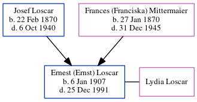

Ernest (Ernst) Loscar 1907 - 1991
[ Home ] | [ Calendar ] | [ Surnames Index ] | [ Census Index ] | [ Family History ]The child of Josef Loscar (a hatmaker) and Frances (Franciska) Mittermaier, Ernest Loscar, the great-uncle of Michele Copp (née Phillips), was born in Germany on Jan 6, 19071,2,3,4,5,6,7. He and was married to Lydia Stella Loscar.
During his life, he was living in Fairfax, Tucker, West Virginia, USA in 19201; in Pittsburgh, Pennsylvania, USA in 19298; in Pittsburgh, Allegheny, Pennsylvania in 19302; in Franklin, Allegheny, Pennsylvania in 19353; and in Franklin, Allegheny, Pennsylvania in 19403. He arrived in Unknown Poe on Sep 30, 1915. On May 14, 1921 he arrived in New York, New York. He traveled from Le Havre.
He died on Dec 25, 1991 in Erie, Pennsylvania, USA5.
Parents
- Josef was born on Feb 22, 1870
- Frances (Franciska) was born on Jan 27, 1870
Citations
- 1920 United States Federal Census Online publication - Provo, UT, USA: MyFamily.com, Inc., 2005. For details on the contents of the film numbers, visit the following NARA web page: NARA. Note: Enumeration Districts 819-839 on roll 323 (Chicago City.Original data - United States of America (Marital Status: Single; Relation to Head: Son)
- 1930 United States Federal Census Online publication - Provo, UT, USA: MyFamily.com, Inc., 2002.Original data - United States of America, Bureau of the Census. Fifteenth Census of the United States, 1930. Washington, D.C.: National Archives and Records Administration, 1930. T626, 2,667 rol
- 1940 United States Federal Census Ancestry.com Operations, Inc. (Marital Status: Married; Relation to Head: Head)
- New York Passenger Lists, 1820-1957 Online publication - Provo, UT, USA: The Generations Network, Inc., 2006.Original data - Passenger Lists of Vessels Arriving at New York, New York, 1820-1897; (National Archives Microfilm Publication M237, 675 rolls); Records of the U.S. Customs Service, R
- Social Security Death Index Online publication - Provo, UT, USA: MyFamily.com, Inc., 2006.Original data - Social Security Administration. Social Security Death Index, Master File. Social Security Administration.Original data: Social Security Administration. Social Security Death Inde
- U.S., Index to Alien Case Files,1944-2003 Ancestry.com Operations, Inc. (Index to Alien Case Files at the National Archives at Kansas City, compiled ca. 1975–2012, documenting the period 1944– 2003. Data file. Records of the U.S. Citizenship and Immigration Service (USCIS)., Record Group 566. National Archives and Records Administration, Washington, D.C.)
- U.S., World War II Draft Cards Young Men, 1940-1947 Ancestry.com Operations, Inc. ( View Sources.)
- U.S., City Directories, 1822-1995 Ancestry.com Operations, Inc. (Original sources vary according to directory. The title of the specific directory being viewed is listed at the top of the image viewer page. Check the directory title page image for full title and publication information.)
Family Tree
Generated by ged2site. Last updated on Jun 6, 2024